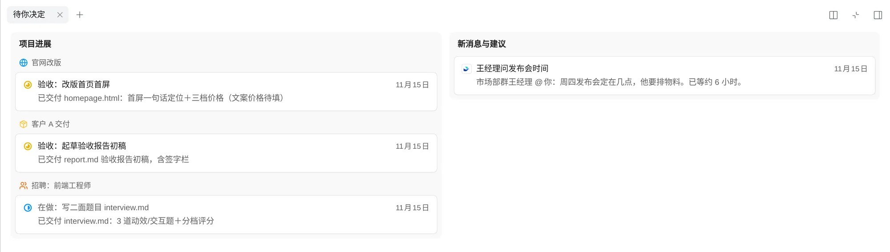
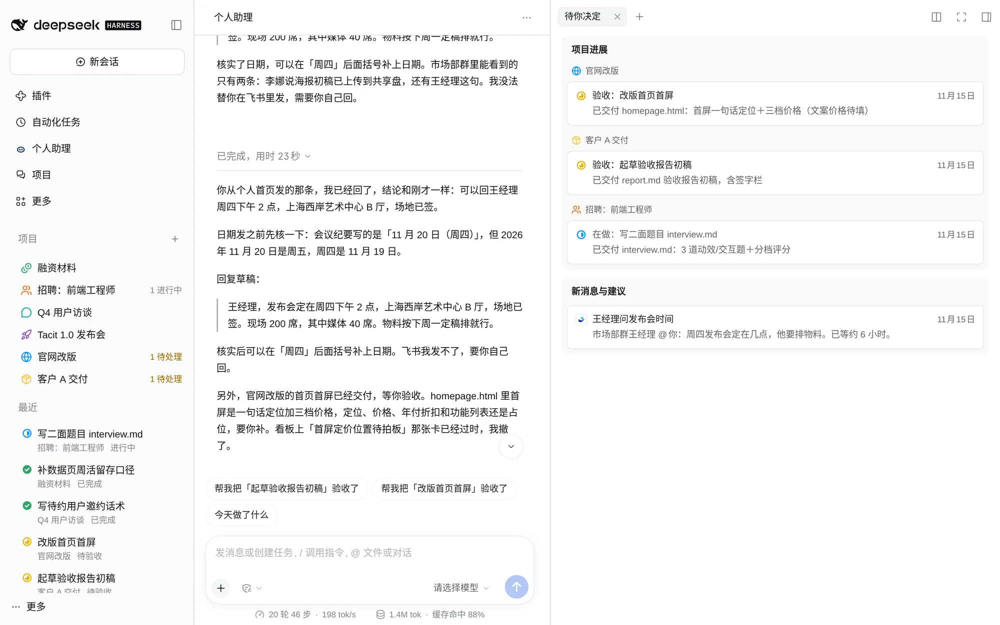
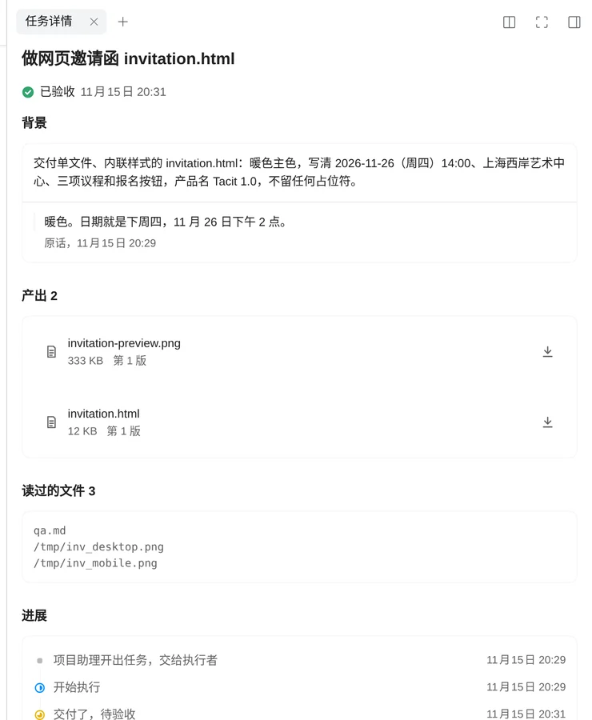
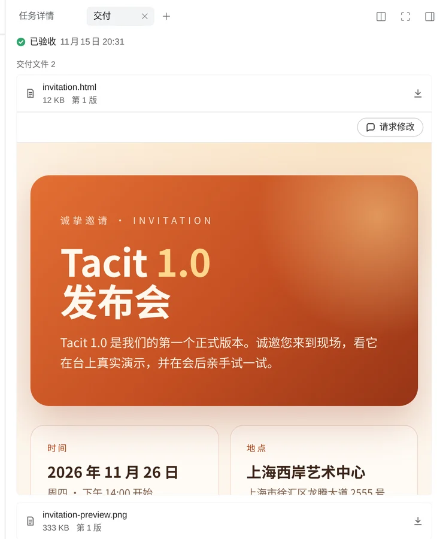

执行者随时可换
每个任务默认由 DeepSeek Harness 执行。机器上有 Claude Code 或 Codex，就把任务交给它；也可以自己接手，做完再交还。你输入的话跟着任务走。
DS-buddy 是 DeepSeek Harness 里的一层上下文。你说过的话、项目里发生的事、你放行的飞书消息和电脑上的活动，它都收在一处，再把每个任务需要的那一份交给执行者。你只说目标，只在需要你拍板的时候被叫到。

真实界面，演示数据。
多 agent 卷了一年，
我们决定把 agent 藏起来。
你要管的不是一屋子 agent，而是结果，和几件等你决定的事。把活拆给多个 agent，意义只在于让每一步拿到干净的上下文。所以 DS-buddy 把这一层收到后面，把那份清单放到你面前。
项目助理先开工能开的，再问你没说清的。

「待你决定」是一块跨项目的看板，分两块：项目进展，和外面来的新消息与助理自己的建议；今天完成的默认收起。

每个任务一页：为什么做、怎么算完成、读过什么、进展到哪。

网页直接在面板里渲染，图片直接显示，文档直接预览。看过，验收通过，或者请它改。

每个任务默认由 DeepSeek Harness 执行。机器上有 Claude Code 或 Codex，就把任务交给它；也可以自己接手，做完再交还。你输入的话跟着任务走。
「关于你」只记你亲口说过的话，每条带原话，随时能撤销。工作记忆每条带依据。
夜里电脑闲着的时候，助理把这一天过一遍。早上有几件事放进「等你」，每件写明出处，另有一页日记。
所有状态都是同一条事件日志里的记录。看板、任务详情、记忆都从它算出来，不会互相打架。
agent 被叫醒时只知道「项目对话有 3 条未读」，正文自己去收件箱读，回合结束才确认。唤醒丢了，消息不会丢。
代码只查机械的事：引用的原话是否真在那条消息里，数字是否来自材料。理解和措辞交给模型。
| 做法 | 学自 |
|---|---|
| 每个 agent 一个收件箱，唤醒只带未读数，回合结束才确认 | Raft |
| 任务字段和委派方式 | Multica |
| 项目外壳和项目说明 | Claude Projects |
| 字号、行高、卡片、设置页，按实测数值 | Codex、Claude 桌面端 |
| 状态图标：随进度填充的圆环 | Linear |
| 像收件箱一样读的看板 | Gmail、Linear、Multica 收件箱 |
| 按时间排的一天 | ChatGPT Computer History |
# 需要 DeepSeek Harness 0.2.x 和 Node 24 以上
git clone https://github.com/hovocope135-tech/DS-buddy
dsh plugin --profile web add "$(pwd)/DS-buddy/plugin"
dsh --profile web
DeepSeek Harness 的一个插件。它加上项目、任务、一块「待你决定」看板和一个个人助理，让你交代出去的事被拆开、被跟住、做完再回到你面前。
DeepSeek Harness 0.2.x 的 Web profile，Node 24 以上。模型跟着你 DeepSeek Harness 的配置走。Claude Code 和 Codex 是可选的。
在运行它的那台机器上，是一条事件日志。飞书和 Mac 文件夹都是只读，只读你允许的，随时能关。模型的 key 只放在那台机器上，不进仓库。
它们把 agent 请进房间，和你一起聊，单位是 agent 和频道。DS-buddy 的单位是任务，agent 收在任务后面，你看到的是一块等你决定的看板。消息投递的做法我们学自 Raft，上面写了。
它们是云端的通用 agent，替你把活干了。DS-buddy 是你自己 DeepSeek Harness 上的一种上下文组织方式：执行者可以换，文件留在你的文件夹里。
只能跑在 DeepSeek Harness 里。飞书只读。Codex 需要你机器上自己登录，而且它跑完一个完整任务还没有验证到；Claude Code 验证过。这两个执行者都以你的系统用户身份运行，不弹权限确认，也没有沙箱。
DS-buddy 以 MIT 许可证开源。花钱的只有你自己选的模型。